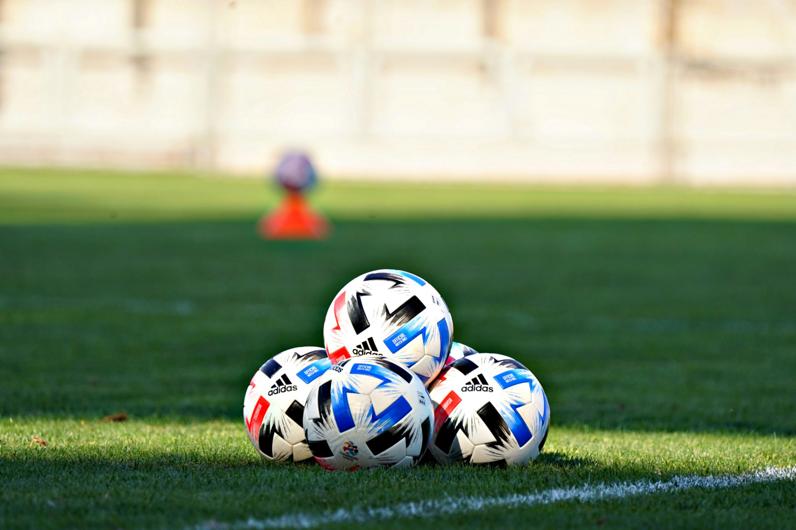

Mes passions
J’aime surtout le football, puis les jeux vidéo comme FIFA et GTA.
Le football est ma passion numéro 1 : j’aime jouer avec mes amis et regarder les grands matchs (surtout ceux du Real Madrid CF).

J’aime jouer à :
- FIFA : pour le côté compétition et foot que ce soit avec ou contre mes amis
- GTA : pour l’histoire et le monde ouvert avec mes amis
- Et d’autres jeux selon les nouveautés
Je préfère les jeux de sport et d’action.